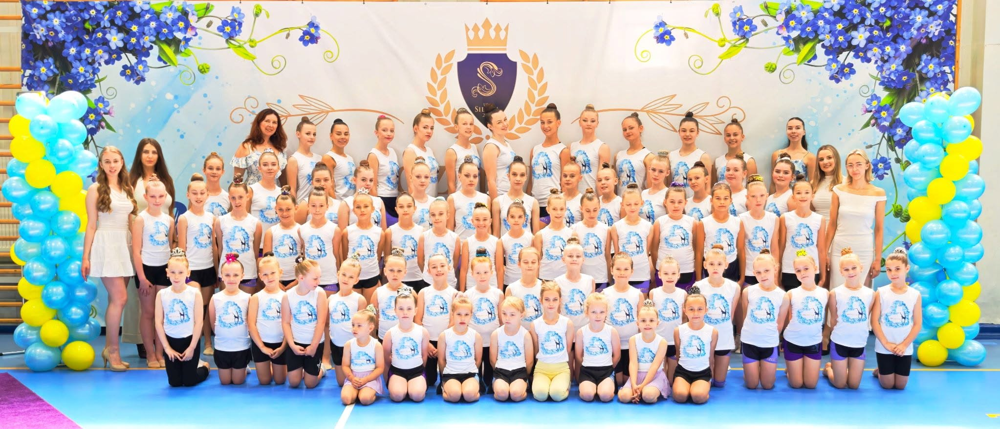

Trening techniczny
Praca nad równowagą, skokami, obrotami, falą ciała i precyzją ruchu. To baza, która pomaga zawodniczkom wykonywać układy lekko i bezpiecznie.

Gimnastyka artystyczna
Podstrona poświęcona treningom, rozwojowi zawodniczek i przygotowaniu do pokazów oraz zawodów gimnastyki artystycznej.
O dyscyplinie
Gimnastyka artystyczna łączy taniec, koordynację, gibkość i pracę z muzyką. Na treningach zawodniczki uczą się płynności ruchu, prawidłowej postawy, techniki elementów oraz pewności podczas występów.
Praca nad równowagą, skokami, obrotami, falą ciała i precyzją ruchu. To baza, która pomaga zawodniczkom wykonywać układy lekko i bezpiecznie.
Ćwiczenia choreografii, rytmu i wyrazu artystycznego. Zawodniczki uczą się łączyć elementy w spójny występ dopasowany do muzyki.
W zależności od grupy można rozwijać pracę ze skakanką, obręczą, piłką, maczugami lub wstążką. Liczy się kontrola, płynność i dokładność.
Sekcja może służyć do publikowania informacji o pokazach, startach, wynikach oraz przygotowaniach do najważniejszych wydarzeń sezonu.
Dołącz do nas
Dołącz do naszej drużyny!
Prowadzimy nabór dla dzieci i młodzieży.. Treningi odbywają się w sportowym stroju: koszulka, spodenki lub legginsy oraz obuwie sportowe. Jeśli chcesz spróbować swoich sił i dołączyć do zespołu, zgłoś się.